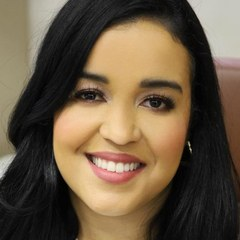
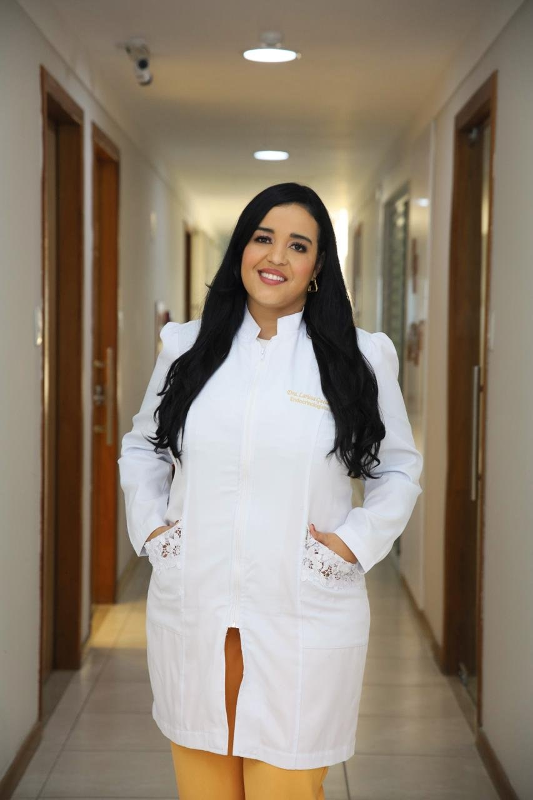

Início · Sobre
Dra. Larissa Guedes: a medicina por vocação, a endocrinologia por amor.
Larissa Cristália Guedes Bias Tavares é endocrinologista em Feira de Santana, fundadora e sócia-administradora do Instituto Leviz, e atua também na rede pública regional.

Apresentação
Quem é a Dra. Larissa
Endocrinologista, assina “Dra. Larissa Guedes” e resume o seu jeito de cuidar no lema “vida mais leve”. Na bio do Instagram @dralarissaguedesendocrino, destaca obesidade, diabetes, tireoide, menopausa e SOP.
“Dra Larissa Guedes escolheu a medicina por vocação e endocrinologia completou esse amor.”
Antigo site dralarissaguedes.com.br · ver a fonte

Credenciais
Registro profissional
CRM 28040
Registro no Conselho Regional de Medicina, como ela publica.
RQE 19353
Registro de qualificação informado na bio e nas legendas do Instagram.
Endocrinologista desde 2020
Vínculos como endocrinologista e metabologista no CNES desde março de 2020.
Atendimento particular
No consultório, como ela informa na bio e na ficha do Google.
Trajetória
Da saúde da família à endocrinologia
- 2013–2016 · Paraíba e MaranhãoMédica da Estratégia Saúde da Família e, em João Pessoa, médica clínica na UPA Célio Pires de Sá.
- 2017–2019 · Feira de SantanaMédica da Estratégia Saúde da Família na unidade George Américo II.
- 2020–2023 · PoliclínicasEndocrinologista em Alagoinhas, na Rua Nova, em Conceição da Feira e em Serrinha.
- Hoje · Rede públicaEndocrinologista na Policlínica Regional de Feira de Santana, desde 2022, e na Policlínica Municipal de Cachoeira, desde 2025.
Fonte das datas: histórico profissional no CNES.
Consultório
O Instituto Leviz
Em novembro de 2020, a Dra. Larissa abriu a empresa do próprio consultório, da qual é sócia-administradora; hoje ela se chama Instituto Leviz e fica na sala 302 do Centro Médico Sawaya, no Centro de Feira de Santana. O espaço é dividido com outros profissionais de saúde; esta página fala do atendimento de endocrinologia da Dra. Larissa.
“No Instituto Leviz, acreditamos que uma experiência verdadeiramente especial une atenção, escuta e um olhar individualizado para cada paciente.”
Instagram @dralarissaguedesendocrino · ver a fonte
Fonte: cadastro público do CNPJ.
Para as pacientes
Informação em saúde
No Instagram, a Dra. Larissa escreve sobre obesidade como doença crônica, metabolismo e hormônios. Participou do congresso mundial de menopausa e organizou uma roda de conversa no Outubro Rosa sobre os tabus do climatério.
“Ninguém desiste por falta de vontade. Desiste por falta de acompanhamento.”
Instagram, Dia Nacional de Prevenção da Obesidade · ver a fonte
Dúvidas frequentes
Perguntas comuns
Qual é a especialidade da Dra. Larissa?
Endocrinologia e metabologia. Ela publica CRM 28040 e RQE 19353 e aparece como endocrinologista no CNES desde 2020.
Ela atende pelo SUS?
Ela trabalha como endocrinologista em policlínicas da rede pública, segundo o CNES. O acesso a esses atendimentos segue as regras da rede pública, e não o WhatsApp do Instituto.
Onde ela atende no particular?
No Instituto Leviz, Centro Médico Sawaya, sala 302, no Centro de Feira de Santana, e online.
Agende
Um passo de cada vez, para uma vida mais leve.
Consulta particular com hora marcada no Instituto Leviz — Centro Médico Sawaya, 3º andar, sala 302, no Centro de Feira de Santana — ou online. Fale com a equipe pelo WhatsApp (75) 99279-1577.